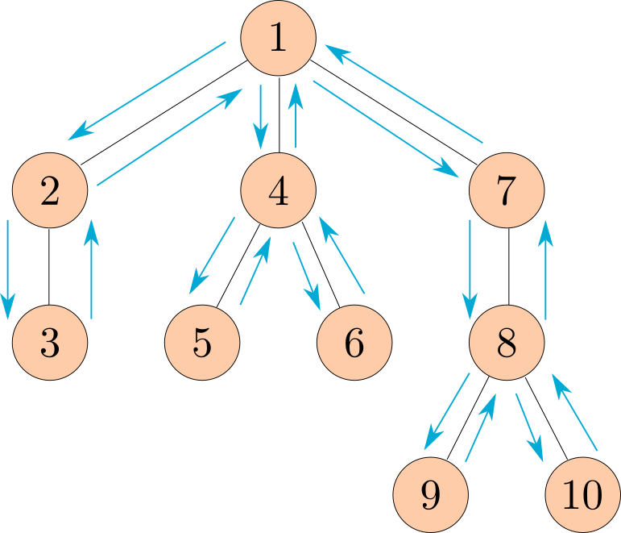

⚠️ This content is archived as of March 2026 and is retained exclusively for reference. Find the most current offering here.
Lab 12: Review
Due by 11:59pm on Friday, May 1.
Starter Files
Download lab12.zip.
Required Questions
Q1: Add Links
Write a function add_link that takes in two linked lists, link1 and link2, and returns a new linked list
that concatenates link2 to the end of link1.
You may assume that the input list is shallow; none of its elements are themselves another linked list.
Note: You may not assume that the input lists are of the same length.
Challenge (Optional): Do NOT assume that the input list is shallow (i.e. your input can be a nested linked list). Hint: use the built-in
typefunction.
def add_links(link1, link2):
"""Adds two Links, returning a new Link
>>> l1 = Link(1, Link(2))
>>> l2 = Link(3, Link(4, Link(5)))
>>> new = add_links(l1, l2)
>>> print(new)
(1 2 3 4 5)
>>> new2 = add_links(l2,l1)
>>> print(new2)
(3 4 5 1 2)
"""
"*** YOUR CODE HERE ***"
Use Ok to test your code:
python3 ok -q add_linksQ2: Preorder
Define the function preorder, which takes a Tree instance and
returns a list of all the labels in the tree in the order that
they appear when the tree is printed.
The following diagram shows the order that the nodes would get printed, with the arrows representing function calls.

This ordering of the nodes in a tree is called a preorder traversal.
def preorder(t):
"""Return a list of the entries in this tree in the order that they
would be visited by a preorder traversal (see problem description).
>>> numbers = Tree(8, [Tree(2), Tree(9, [Tree(4), Tree(5)]), Tree(6, [Tree(7)])])
>>> print(numbers)
8
2
9
4
5
6
7
>>> preorder(numbers)
[8, 2, 9, 4, 5, 6, 7]
"""
"*** YOUR CODE HERE ***"
class Tree:
"""A tree has a label and a list of branches.
>>> t = Tree(3, [Tree(2, [Tree(5)]), Tree(4)])
>>> t.label
3
>>> t.branches[0].label
2
>>> t.branches[1].is_leaf()
True
"""
def __init__(self, label, branches=[]):
self.label = label
for branch in branches:
assert isinstance(branch, Tree)
self.branches = list(branches)
def is_leaf(self):
return not self.branches
def __repr__(self):
if self.branches:
branch_str = ', ' + repr(self.branches)
else:
branch_str = ''
return 'Tree({0}{1})'.format(repr(self.label), branch_str)
def __str__(self):
return '\n'.join(self.indented())
def indented(self):
lines = []
for b in self.branches:
for line in b.indented():
lines.append(' ' + line)
return [str(self.label)] + linesUse Ok to test your code:
python3 ok -q preorderQ3: I Heard You Liked Functions...
Define a function cycle that takes in three functions f1, f2, and
f3, as arguments. cycle will return another function g that should
take in an integer argument n and return another function h. That
final function h should take in an argument x and cycle through
applying f1, f2, and f3 to x, depending on what n
was. Here's what the final function h should do to x for a few
values of n:
n = 0, returnxn = 1, applyf1tox, or returnf1(x)n = 2, applyf1toxand thenf2to the result of that, or returnf2(f1(x))n = 3, applyf1tox,f2to the result of applyingf1, and thenf3to the result of applyingf2, orf3(f2(f1(x)))n = 4, start the cycle again applyingf1, thenf2, thenf3, thenf1again, orf1(f3(f2(f1(x))))- And so forth.
Hint: most of the work goes inside the most nested function.
Hint: How can you utilize the
%operator to achieve the cyclic behavior? Try computingn % 3for all integersnfrom 0 to 12. What pattern do you notice?
def cycle(f1, f2, f3):
"""Returns a function that is itself a higher-order function.
>>> def add1(x):
... return x + 1
>>> def times2(x):
... return x * 2
>>> def add3(x):
... return x + 3
>>> my_cycle = cycle(add1, times2, add3)
>>> identity = my_cycle(0)
>>> identity(5)
5
>>> add_one_then_double = my_cycle(2)
>>> add_one_then_double(1)
4
>>> do_all_functions = my_cycle(3)
>>> do_all_functions(2)
9
>>> do_more_than_a_cycle = my_cycle(4)
>>> do_more_than_a_cycle(2)
10
>>> do_two_cycles = my_cycle(6)
>>> do_two_cycles(1)
19
"""
"*** YOUR CODE HERE ***"
Use Ok to test your code:
python3 ok -q cycleCheck Your Score Locally
You can locally check your score on each question of this assignment by running
python3 ok --scoreThis does NOT submit the assignment! When you are satisfied with your score, submit the assignment to Gradescope to receive credit for it.
Submit Assignment
Submit this assignment by uploading any files you've edited to the appropriate Gradescope assignment. Lab 00 has detailed instructions.